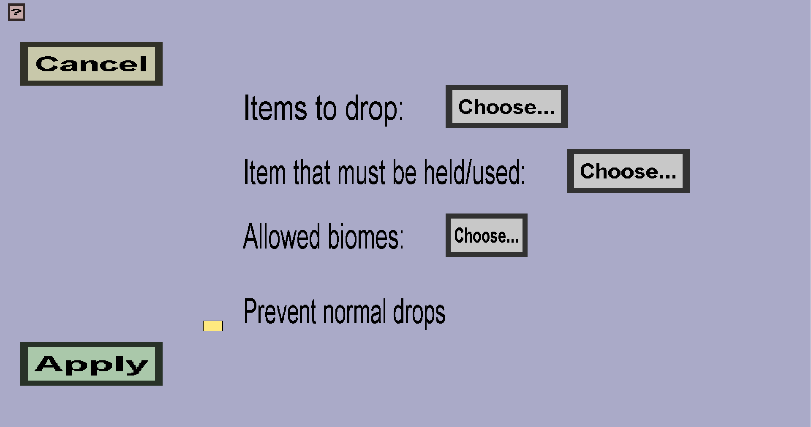

The drop menu is the menu where you can select the item that you want to drop, how often it drops and how many it drops.
When clicking on the button, a submenu opens where you can select the item that drops. Only custom items can be selected. The menu that opens up should look like this:
The drop chance indicates the chance that an item has to drop. If you for instance want an item to drop once per 20 (blocks or mobs, on average), then you would enter 5% as the drop chance. 100% means that it drops every time, 1% means that it drops once every 100 (blocks or mobs, on average). Allowed values are between 1 and 100 (decimals excluded), if values are outside this range then red text at the top of the page appears indicating that it is wrong.
This inputfield indicates how many items drop at minimum when an item drops. So if the randomiser has determined that an item drop takes place, the minimum amount to drop is the amount of items that are guaranteed to drop.
This inputfield indicates how many items drop at maximum when an item drops. So if the randomiser has determined that an item drop takes place, the maximum amount to drop is the amount of items that are dropped at maximum.
The checkbox indicates whether this drop should overwrite the default minecraft drops. This has as effect that the drops are effectively replaced.
Pressing the cancel button will return you back to the overview menu (at the top of the page). Everything you have setup will be lost and cannot be restored without doing everything again.
Pressing the apply button adds a new entry to the overview menu. The information can be found on the respective pages (Block Drop Menu and Mob Drop Menu).